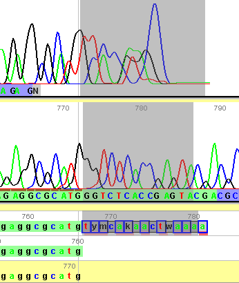
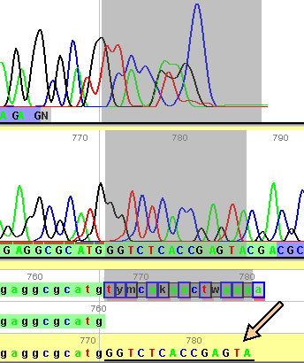

Altering calls for existing bases
If you would like to edit a base call, use the pointer to select the desired site in the "Edited in Matrix" sequence (at the bottom of the panel). Type in the base you would like present at that site, and the corresponding character matrix will be updated with the change. Any base that has been so edited is marked by a black bar underneath it. |
|


Moving new bases from a read into the matrix
In some cases, users may wish to include sequence information from reads that was not imported by Phred/Phrap/Mesquite (Note: this only applies to sequence data from chromatograms that were processed by Phred/Phrap/Mesquite. You cannot currently import additional chromatogram sequence data in a post-processed matrix. If you wish to include additional chromatograms, you will need to run the Phred/Phrap process over from the beginning).
For example, users may wish to include data from the end of a read that lacked a complement:
|
Let's say we'd like to move the sequence from the high qualilty read (second from the top) into the matrix. |

|
Begin by using the pointer ( |
 |
Next, using the move to matrix tool ( |

|
The selected bases will now be present in the matrix, and are shown in the corresponding read of the chromatogram window. |
 |
 ),
click on the sequence you would like to move to the matrix.
),
click on the sequence you would like to move to the matrix.